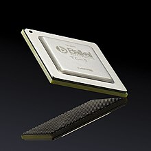
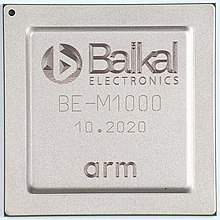
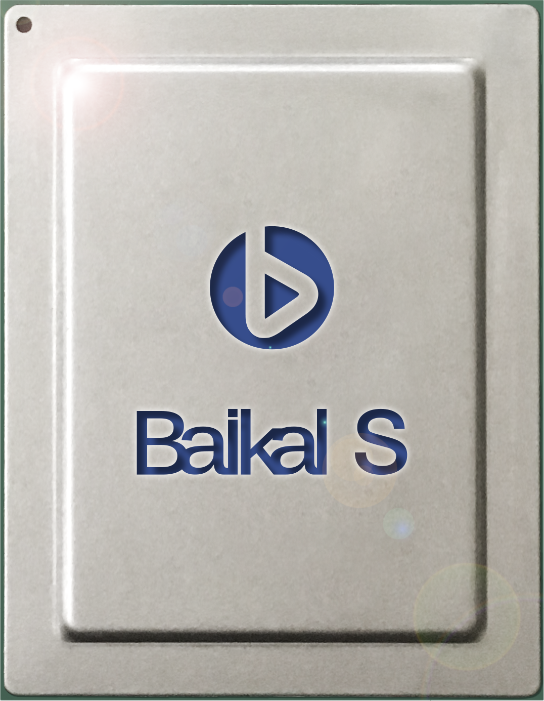

Рассмотрим последний из процессоров на рынке под названием Байкал
Baikal-T1 — российский процессор семейства Baikal, созданный российской бесфабричной компанией Baikal Electronics с использованием двух 32-битных процессорных ядер P5600 архитектуры MIPS32 Release 5 от компании Imagination Technologies. Предполагается, что на основе чипа будут создаваться различные сетевые устройства, например беспроводные маршрутизаторы, домашние маршрутизаторы, устройства промышленной автоматизации.
В мае 2015 компания Baikal Electronics, основанная компанией «Т-Платформы», объявила о выпуске процессора Baikal-T1. Выпускается в Тайване на фабрике TSMC по техпроцессу 28 нм. Компания представила инженерные образцы процессора 26 мая 2015 года. Разработка реализована в том числе при поддержке Министерства промышленности и торговли РФ с привлечением средств Федеральной целевой программы «Развитие электронной компонентной базы и радиоэлектроники на 2008—2015 гг.» и Фонд инфраструктурных и образовательных программ (ФИОП) Роснано
| Тактовая частота | до 1200 МГц |
| Число ядер | 2 |
| Кэш-память 2-го уровня | 1 МБ |
| Энергопотребление | 5 Вт |
| Техпроцесс | 28 нм |
| Процессорное ядро | MIPS32 P5600 Warrior |
| Интерфейсы | 1 порт 10 Gb Ethernet (BASE KR/KX4), 2 порта 1 Gb Ethernet (RGMII), контроллер PCIe Gen.3 x4, 2 порта SATA 3.0, USB 2.0, DDR3-1600 (32 бита + ECC), GPIO, UART, SPI, I2C |
| Разъём | HFC-BGA 576 |
| Размеры корпуса | 25x25 мм |
| Год начала массового производства | 2016 |
Baikal-M — процессор с низким энергопотреблением семейства Baikal, разработанный российской компанией Baikal Electronics. Обеспечивает производительность между интеловскими процессорами Atom E3940 и Core i3-7300Т
| Архитектура | ARMv8-A |
| Число ядер | 8 ядер ARM CortexA57, 4 кластера по 2 ядра, до 1,5 ГГц |
| Графические ядра | 8 ядер Mali-T628, до 750 МГц, кэш L2: 128 Кб на кластер |
| Кэш | L3: 8 Мб |
| Контроллер памяти | DDR3/DDR4-2400 64 бит DRAM, ECC |
| Сопроцессоры | ARM NEON |
| Техпроцесс | 28 нм |
| Размер кристалла | 240 кв. мм |
| Энергопотребление | до 35 Вт |
Baikal-S — российский серверный процессор семейства Baikal, созданный российской бесфабричной компанией Байкал электроникс с использованием 48-ми 64-битных процессорных ядер Arm Cortex-A75 архитектуры Armv8-A. Процессор Baikal-S предназначен для серверов, СХД и суперкомпьютерных систем для B2G и B2B сегментов рынка. Производительность в HPL составляет 385 Гфлопс. Ориентировочная цена одного процессора ожидается на уровне $3 тыс.
| Тактовая частота | до 2,5 ГГц |
| Число ядер | 48 |
| Кэш-память 1-го уровня | 128 КБ (64 КБ кэш инструкций и 64 КБ кэш данных) |
| Кэш-память 2-го уровня | 24 МБ (512 КБ на ядро) |
| Кэш-память 3-го уровня | 24 МБ (2 МБ на кластер) |
| Кэш-память 4-го уровня | 32 МБ |
| Память | 6 × DDR4 3200 МГц с поддержкой ECC до 768 ГБ на сокет (128 ГБ на канал) |
| Энергопотребление | 120 Вт |
| Техпроцесс | 16 нм |
| Процессорное ядро | Arm Cortex-A75 |
| Интерфейсы |
80 линий PCIe Gen 4.0 (48 линий общие для CCIX-интерфейса);
|
| Разъём | FCLGA-3467 |
| Размеры корпуса | 58x75,5 мм |
| Год начала массового производства | 2022 |